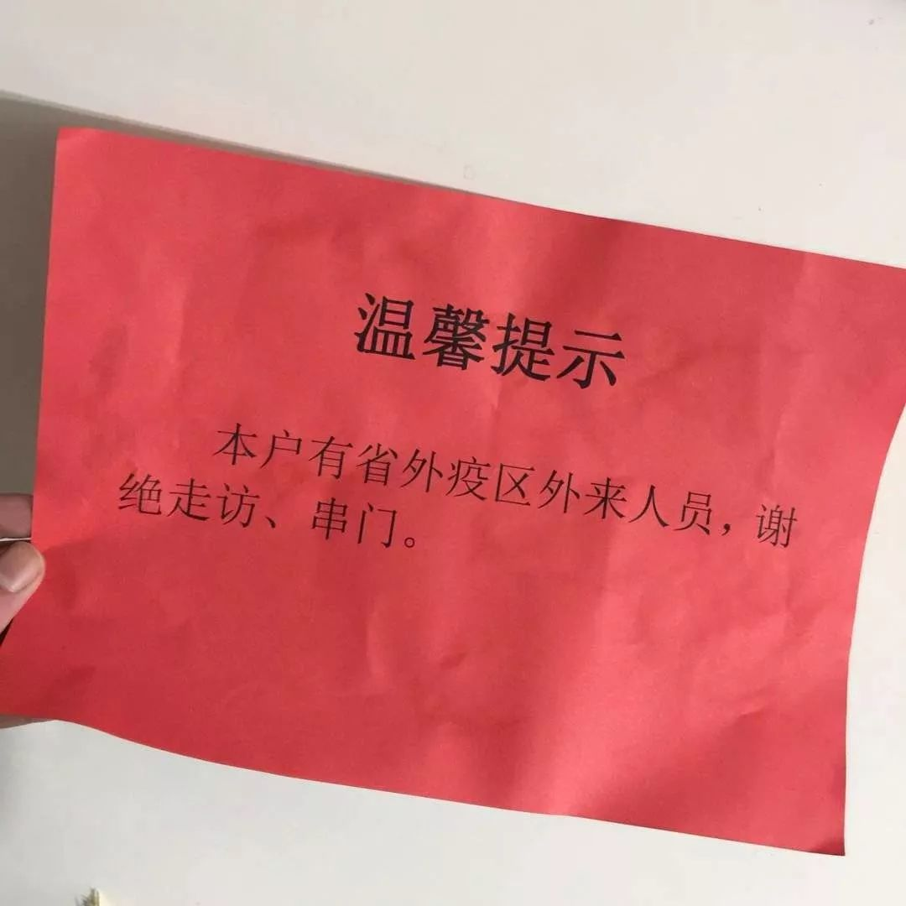
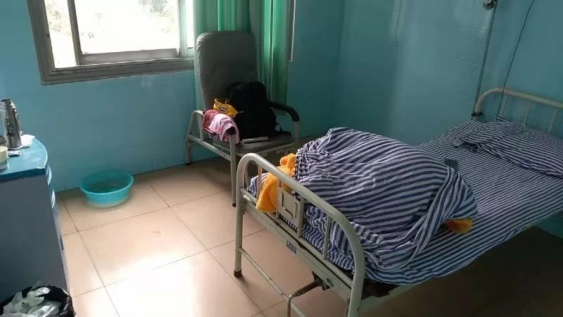
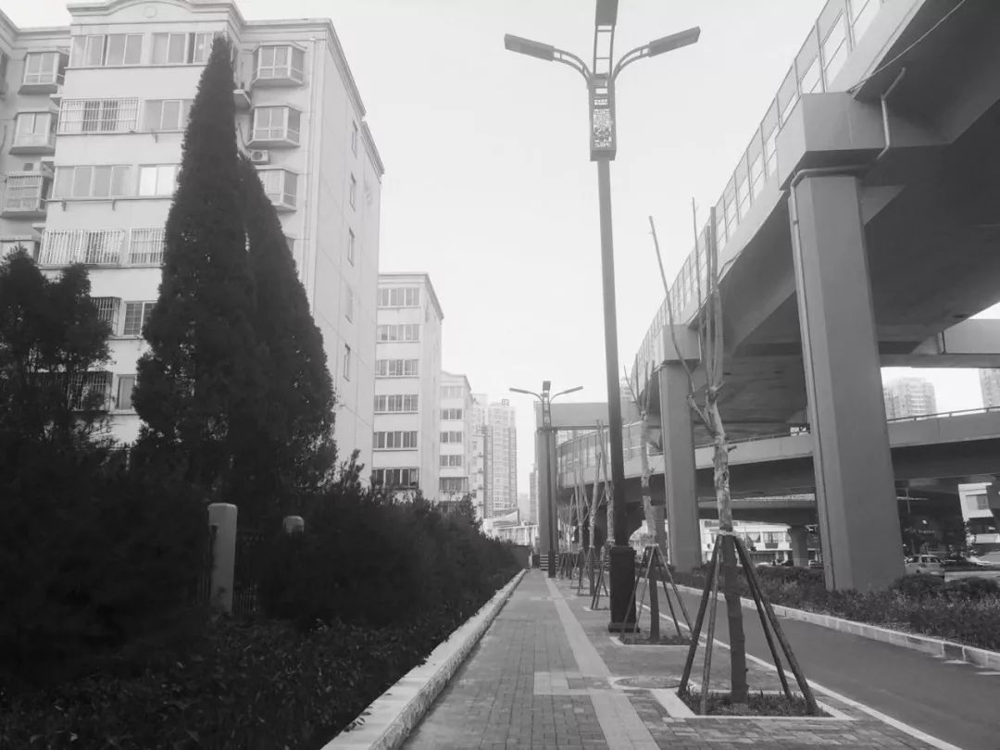
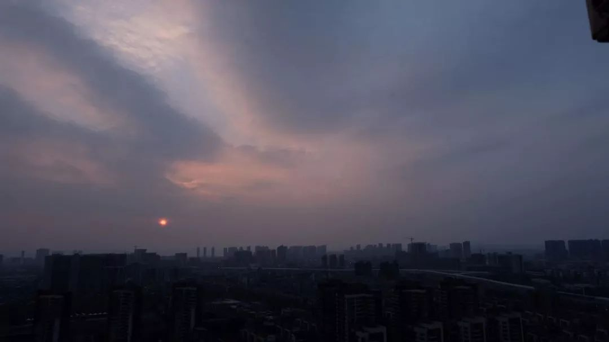

7位湖北人自述：我的“流浪”春节
原文链接 备份链接 《战疫口述记》，是燃财经在新型冠状病毒肺炎期间推出的特别栏目，记录疫情亲历者的观察和感受。本文为第3篇，查看前2篇请点击《农村这样防肺炎》《我在武汉战肺炎》。 作者 | 苏琦 金玙璠 孟亚娜 唐亚华 孔明明 魏佳 …
开启更有意思的武汉！请点击上方优良better →点击右上角“…” → “设为星标 ”

1月26日，湖北省人民政府新闻发布会上，武汉市长周先旺戴着口罩，疲惫地说出：“因春节因素和疫情因素，大约有500多万人离开了这座城市，还有900多万留在武汉。”
一时间，网上关于这500万人的讨论风涌而起。据经济观察报援引数据分析，1月以来武汉流出人口近七成进入了省内其他城市，剩下的则大多是正常节前返乡的商务人士、在汉务工者及大学生。
关于这些散落各地的“新武汉人”，国家卫健委曾发出过呼吁，要求各地停止歧视等不公平对待：我们共同的敌人是疾病，不是武汉人。
春节已然过去，这500万人归期何时，仍是个未知。

离开武汉的时候，在这座城市长大，读书，工作的章璟，完全没有预料到自己会有家归不得。
早在2019年9月份，他就已经和四位本科时期的好友约定好共同出游，行程一直策划了两个月。就在出发前，章璟遭遇了第一次意外——原定18日的航班取消，他只好改签提前，17日从武汉离开，前往吉隆坡和同学们汇合。
老友重逢的喜悦，很快被疫情的阴霾遮掩。20日，社交网站、新闻平台关于疫情的新闻越演越烈，在亚庇游玩的章璟和朋友们意识到状况不对，打算买些口罩带回国。
旅行期间章璟所摄
因为游客太多，亚庇所有能用微信、支付宝付款的中英文24小时店内口罩都已销售一空，最后在私人导游带领下，章璟一行人才在当地生活区的小店里有所收获。
1月23日凌晨，武汉市新型冠状病毒感染的肺炎疫情防控指挥部发布第1号通告，宣布自当日10时起，武汉全市城市公交、地铁、轮渡、长途客运暂停运营；机场、火车站离汉通道暂时关闭。并呼吁市民非必要原因不要离开武汉。原本计划这一天返程的章璟，因为航班取消不得不跟同学回家，暂居昆明。
1月24日早9：00，章璟和同学走出昆明长水机场，由于在亚庇时出现了轻微感冒症状，二人取完车后直奔云南省第一人民医院。经过发热门诊医生排查，两人症状并不典型，建议居家隔离。
原本，父母并不同意章璟留在外地，在老一辈人看来，“过年一家人要在一起”。但随着疫情发酵，客观上也难以返回武汉，父母妥协了，只是要求儿子每天打电话互报平安。
章璟在朋友家所做
坏消息不时传入耳中，有远房亲戚全家感染新型冠状病毒，也有身边朋友的父母感染，章璟一边担心，一边又显得有些无奈。
“面对这个情况，响应科学号召做好自己的封闭隔离比什么都重要。”
现在，章璟每天的生活就是做饭、看电视、在家锻炼。除了留在武汉的家人，他担心的事还有一件——不恢复开工上班，拿什么还卡债。
小杨没想到，已经离开武汉两个月的他，还会被卷进对疫情的恐惧里。
1月27日上午，两个社区的工作人员突然上门，要求登记他的回乡时间，并测量体温。正在电脑前对接支援武汉的物资、核实医院需求的小杨应付着走完流程，转头又忙碌起来，“我牵挂的朋友们，’家人们’在武汉，这是我生活了五年的城市”。
早在1月1日，小杨就通过网络获悉武汉出现“不明原因肺炎”，他看到华南海鲜批发市场实行休市的公告，以及抖音上市场内封闭消毒的视频，以为只是一场局限于市场内的流感。当时他隐约有些担心，跨年活动人群密集，会加速疾病传播，却完全没有意料到，这场疫情会来得如此凶猛。

小杨的桌面
1月23日，全国确诊630人，小杨所在的内蒙也出现了首例确诊患者。在他反复要求下，家人把普通防雾霾口罩换成了医用口罩，原本去北京探望姥姥、姥爷的计划也遭到搁置。
两天后，呼和浩特市疫情防控工作领导小组发出通告，要求公交车驾乘人员强制佩戴口罩，并在高速路收费站开展体温检测。但据小杨观察，街上还是有市民不做防护出行，“普遍是老人”。
听说有朋友在开展救援行动，小杨很快报了名，车队的500人群已经建了好几个，线上的活跃人数则有几十个，每天打无数个电话，协调物资和医院需求，调度车队的动向，小杨的生理和心理都承受着极大的压力，夜里噩梦不断，都是关于病毒的。
“我还算能睡着的，有的做表格对接的小姐姐，一哭就是一晚上。”

参与救援队的第四天，家人发现门上贴了张红色的告示：“本户有省外疫区外来人员，谢绝走访、串门”。
小杨只觉得好玩，拿着告示拍了张照。

住在隔离病房里的李晗，自从个人信息泄露以后，突然成了大家关心的重点。
回家的日期，早在12月23日就已经和家人商量好了，后来通过网络知道疫情信息，李晗也警惕起来，每天从寝室往返实验室都戴着一次性口罩。
那时，关于疫情的舆论还以“可防可控”为主。1月19日，李晗买了N95口罩准备返程，据他观察，人们的防护意识似乎并不高，候车厅一排座位13个人，只有3个人戴了口罩。
回家后不久，李晗就感觉自己有些发热。他连忙出门，前往眉山当地医院做检查，半路上司机还开过玩笑，说戴着口罩“过于夸张”。所幸，李晗的体温经过测量只有36.2度，医生建议他回家居家隔离，李晗放心不过，又拍了CT做了血常规，显示一切正常。

李晗的隔离病房
1月23日，居家隔离的李晗看到所在社区的网络负责人要求离汉返乡人员进行登记，没想到登记做完之后，李晗的姐姐就转发来一个excel表格，里面赫然是包括李晗在内镇上45位居民的个人信息。信息十分细致，包含身份证、手机号、姓名、性别、家庭住址以及返乡乘坐交通工具及时间。
信息泄露后，许多平时几乎不联系的高中同学都给李晗发来问候，至于网络上其他地区出现的骚扰电话、无端攻击等现象，他还没有遭遇过。
居家自我隔离的日子也很快到了头，1月26日晚上，李晗接到社区医生的电话，再次核实他回程乘坐的车辆信息，第二天上午，李晗接到了通知，要求他前往社区医院接受隔离观察。
前往医院的路上，这座年节时分，本该十分热闹的小城空荡一片，“上午十点的街道，像是平时早上六七点的样子”。

隔离期间的饮食
李晗生活的社区原本没有隔离条件，为了应对这次突发的疫情，不得不紧急把社区医院腾空，三楼的单人病房里，依然看得出昔日办公室、财务室的痕迹。由于条件简陋，虽然实现了一人一间，但饮水机、卫生间、洗手台等公共区域依然重叠。
“应该不能说是一刀切，但我在这里总感觉不太放心。”
1月31日凌晨，达瓦熬了个夜，在等着世界卫生组织对中国疫情状况的评估结果。
达瓦从事旅游业，主要业务是制定个性化的境外旅游计划，世卫是否将新型冠状病毒肺炎疫情列为国际公共卫生事件，以及会对这一疫情采取哪些措施，都会对这个行业产生十分密切的影响。面对未知的前景，她难免有些忧虑：“只有疫情结束了，其他的事情才有所谓的确定性”。
早在元旦之前，达瓦就已经开始关注起新闻里的“不明原因肺炎”，由于较高的个人防范意识，那时起她已经开始有意识规避人口密集处，并且开始准备起口罩、酒精等防护措施。

达瓦家楼下街景
1月11日，达瓦离开武汉，回到老家洛阳。那时疫情还没有进入增长期，媒体也未发布关于人传人的确切证据，达瓦说，如果早知道疫情会走向这一步，“我可能不会选择回家”。
洛阳的首例新型冠状病毒确诊于1月22日，自病例发现以来，街头的商店、影院纷纷停业，只有少数大型商场还在开放。达瓦居住的小区实行了封闭式管理，进出都需要测量体温，户口所在地派出所、社区、卫生所前后打了三个电话，向她询问返乡以来的身体情况。
虽然居家隔离期早已过去，但达瓦还是决定呆在家里，通过APP学习英语、看纪录片、读书充电。她最近在看《我与你》——20世纪哲学家马丁·布伯从犹太思想出发，对近代西方哲学进行批判的重要哲学著作。

达瓦最近在阅读的《我与你》
“可以多陪陪父母，也是一件挺好的事情，凡事都有两面性。”
虽然现在连什么时候可以返回武汉都还难以确定，但自主创业的达瓦，依然决定在正月十五（2月8日）后开始复工，通过线上先做一些可以完成的工作。
“现在没有太多别的想法，就是希望可以做力所能及的事情。也为武汉的亲朋好友们加油，一切都会过去。”
关于疫情，付璐璐最早的印象是“有限人传人”。
付璐璐的生活半径主要在光谷，离疫情最早发生的汉口华南海鲜市场很有些距离，1月初，她和同事们都以为这只是一次并不严重的小范围传染病，直到17日左右，在越发严峻的舆论环境下，这份乐观终于难以维持。
一切就在短短几天内快速发酵。付璐璐才买第一批十个口罩的时候，武汉街头还是平常的繁荣景象，戴着口罩上下班的她显得有些扎眼。就在她按原定计划返乡的1月22日，淘宝上的口罩价格开始走高，与此同时，家乡南昌街头药房里的口罩也早已销售一空。
由于是从疫区返回，付璐璐向社区报备后，她们一家人都被要求居家隔离，每天要测两次体温通报给居委会负责人，至于食品、日用品则有居委会工作人员帮忙采买。

空城后的武汉
“蛮贴心的。”
虽然足不出户，但付璐璐依然能察觉到空气里的严峻气氛。自从1月26日开始，居委会每天都有专人抬着喇叭进行宣传，要求自湖北返回的居民及时上报。通过网络，她也了解到附近的小区出现确诊病例，整个小区完全封闭的消息。
最让付璐璐感到紧张的，还是自己突然出现感冒症状。
1月29日凌晨，付璐璐突然开始咳嗽，第二天一早她拨通了社区的电话，区卫生局的负责人建议她坐120去医院做检测，但由于咳嗽症状已经消退、未出现发热、呼吸困难等其他症状，付璐璐还是决定再在家观察。
“武汉来的人本来就不是很受欢迎，我担心会对家人造成不好的影响。”

被隔离后的武汉 phone by 二喜
这几天，付璐璐几乎一直呆在自己房间里，就连吃饭都不敢和父母同桌，偶尔去客厅也戴着口罩。所幸，父母的身体一直很健康。
至于疫情的相关消息，她已经有意识在控制自己不要过量阅读，努力在通过打游戏、看书、撸猫分散精力。
“看到数字一天天成千上升，心理真的蛮容易抑郁。”
text | 小周周
photo | 受访者提供
新朋友长按下方二维码
添加”better桑”
老朋友可直接勾搭better君、better酱
加better桑为好友
💬
# 你离开武汉多久了？#
点击文末右下角留言
-
END
· 推荐阅读 ·
原文链接 备份链接 《战疫口述记》，是燃财经在新型冠状病毒肺炎期间推出的特别栏目，记录疫情亲历者的观察和感受。本文为第3篇，查看前2篇请点击《农村这样防肺炎》《我在武汉战肺炎》。 作者 | 苏琦 金玙璠 孟亚娜 唐亚华 孔明明 魏佳 …
原文链接 备份链接 据相关数据统计，春节前，有近500万人离开武汉，他们中有近30%的人离开湖北，他们或出差、或进行计划许久的旅行，或回家过年，但伴随着疫情的加剧，他们成了一群「不被欢迎的人」。 一位武汉的小学老师已经连续三年去厦门过年， …
原文链接 备份链接 本文故事来自一名化名为“平安”的武汉大学生，记述了她从返乡、封城，再到过年所经历的种种。这个特殊的春节，焦虑与希望同在，寂静与喧嚣并存。身处「风暴中心」，从慌乱到乐观，她的心理发生了什么样的变化？让我们一起来看看她过去 …
原文链接 备份链接 桐柏县中心医院 作者供图 作者李强 这次肺炎疫情爆发后，我在老家陆续出现了一些这场疫情中经常被提及的症状。 我的老家是河南省南阳市桐柏县，离武汉仅200多公里。2020年1月23日，农历猪年腊月二十九，我开始干咳、 …
原文链接 备份链接 【财新网】（记者 覃建行）新型冠状病毒肺炎确诊病例激增后，武汉百步亭社区曾于此间举办“万家宴”的活动引发了争议。1月22日，财新记者走访当地，多位居民称此前政府对疫情评估不够，导致在传染性疫情趋重的情况下还举办如此大 …